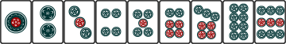
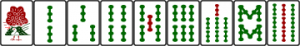
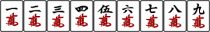
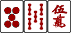
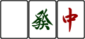
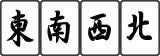

Reglas Riichi Mahjong
La principal actividad realizada en el anime sin dudas era el Riichi Mahjong. Esta variante japonesa del juego de mesa chino cuenta con reglas muy estrictas, que intentaremos explicar a continuacion
Su origen se remonta a 1924, cuando un soldado llamado Saburo Hirayama llevó el juego a Japón. El juego ganó en popularidad rápidamente y se crearon en Tokio los primeros clubs de Mahjong y las escuelas, lo que incrementó todavía más su expansión por el país Nipón. En este proceso de expansión, las reglas chinas del juego original se fueron simplificando y adaptando a la mecánica de los juegos locales. Ya en 2008, había aproximadamente 7,6 millones de jugadores de Mahjong y cerca de 8.900 salones de Mahjong en el país. En 2010, el Mahjong se encumbró como el juego de mesa más popular en Japón.
1 - FICHAS
El Mahjong japonés se juega generalmente con 136 fichas. Las de las 136, hay 34 tipos de fichas diferentes, con 4 copias de cada una.
Esto es igual que en las otras modalidades de Mahjong, pero sin utilizar las flores y estaciones.
Estas 34 fichas se dividen en:
1.1 Los 3 palos
Pinzu:
Del 1 al 9 de Pinzu

Souzu:
Del 1 al 9 de Souzu

Manzu
Del 1 al 9 de Manzu

La única diferencia con el resto de variantes de Mahjong es la utilización de 3 cincos rojos, uno de cada palo:

Estas 3 fichas vienen en los set de Mahjong Riichi junto con las estaciones. Las fichas que no entran son las flores. También es posible jugar al Riichi Mahjong sin estas fichas, aunque su inclusión dará un mayor dinamismo y algo de aleatoriedad.
1.2 Los Honores
Los tres dragones
Haku, Hatsu y Chun

Los cuatro vientos
Nan, Ton, Shaa, Pei
